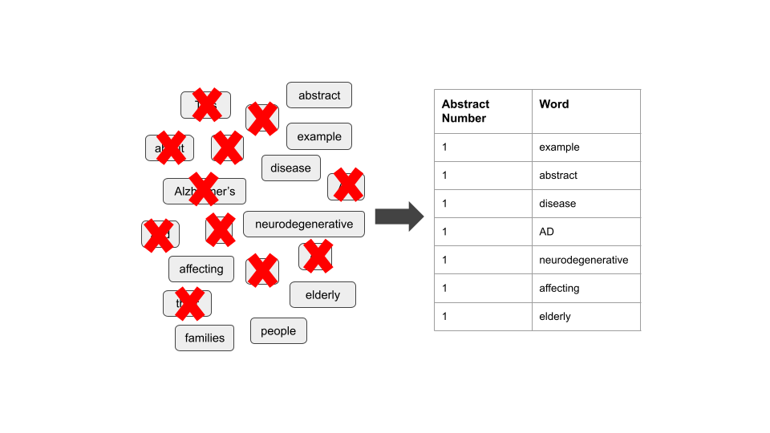
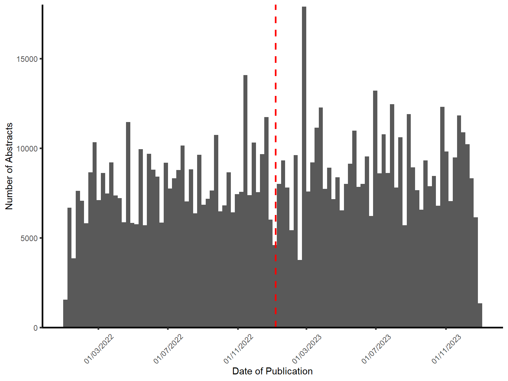

| Criteria: | Filter applied: |
| MeSH term | ‘Alzheimer’s Disease’ |
| Article Type | Books |
| Case Reports | |
| Clinical Study | |
| Clinical Trial | |
| Controlled Clinical Trial | |
| Meta-analysis | |
| Randomised Controlled Trial | |
| Review | |
| Systematic Review | |
| Publication Date | 1st January 2022 to 1st January 2024 inclusive |
| Language | English |
Impact of novel Alzheimer’s disease drug discovery on the research field using text mining and topic models
Introduction
Alzheimer’s Disease
Alzheimer’s disease (AD) is a chronic neurodegenerative disease and the most common cause of dementia. Affecting over 55 million people worldwide, the predominant symptoms of AD usually manifest after the age of 65 and include cognitive impairment, as well as physical and emotional difficulties (“2023 Alzheimer’s Disease Facts and Figures” 2023).
The underlying aetiology of sporadic AD, as opposed to genetically caused familial AD, is largely unknown, however research consensus suggests the accumulation of abnormal proteins, amyloid-beta and tau, disrupt cellular pathways and lead to
AD is progressive and neuronal damage accumulates over a patient’s lifetime leading to hippocampal atrophy. As well as the degeneration of neurons, AD is associated with the build up of abnormal proteins, amyloid-beta and tau (Villemagne et al. 2013).
Treatments for AD
Although there are currently no therapies or interventions that can cure AD, several disease-modifying treatments exist that can alter the course of the disease, alleviate symptoms, and enhance the overall quality of life for patients. A recent comprehensive review by (Huang et al. 2023), identified a shift in clinical trial research, which highlighted more Phase I studies being conducted and more Phase III trials involving anti-amyloid therapies. These trials are involving more patients with early onset AD and mild cognitive impairment (MCI) to help develop preventative therapies. Global estimates for people living with preclinical AD or positive for AD pathology biomarkers were 69 and 315 million, respectively (Gustavsson et al. 2023), therefore increasing research focus on these patient populations is imperative to slow the progression of the disease.
There have recently been two drugs granted approval by the United States Food and Drug Administration (US FDA) which target the pathophysiologies of AD; aducanumab and lecanemab ((Center for Drug Evaluation and Research 2023); (Office of the Commissioner 2023)). These treatments are human monoclonal immunotherapies which aim to target and reduce the beta-amyloid protein aggregates in the brain by binding to its various forms in the amyloid-beta pathway. Furthermore, there are four more anti-amyloid monoclonal antibody treatments which have undergone or are currently in Phase III clinical trials (Cummings et al. 2023). For this study, we will focus on lecanemab, the most recent AD treatment to undergo accelerated approval by the FDA, which was fully approved for treatment in early AD on the 6th July 2023.
Topic Modelling and Text Mining in AD Research
Given the consistent publication of thousands of articles every year concerning AD, focusing on early-stage drug discovery could lead to more literature and clinical findings being published. Systematic reviews and meta-analyses are time consuming and labour intensive, and pose a significant challenge to updating the current understandings in the research literature (Higgins 2019). Topic modelling, a prominent text mining technique, can find patterns and relationships within natural language data, and could provide an automated and unbiased overview of research text. The most common topic modelling method is Latent Dirichlet Allocation (LDA) which assumes, for unstructured text data like research publication, that each document is made up of a number of topics and that each topic is made up of a collection of words (Blei, Ng, and Jordan 2003). Each LDA topic is represented as a probability of words within a topic and a probability of topics within each document, which each follow a Dirichlet distribution.
In silico topic modelling has been used for various applications relating to AD, including describing the research landscape. (Martinelli 2022), identifying novel biomarkers (Greco et al. 2012), and drug repurposing (Nian et al. 2022). Martinelli performed a nine-topic LDA model and identified five mechanistic themes, as well as a topic relating to AD diagnosis and three concerning treatments. To the best of my knowledge, no studies have explored the change to the AD research landscape with the emergence of newly approved immunotherapy treatments. To increase the findability and reduce bias when selecting articles, the litsearchr package will help identify the most important terms which we will reference our search terms against (Grames et al. 2019).
Methods
A full summary of the methodology is provided in Appendix 1. All data analysis and visualisations were done in R version 4.3.2 using tidyverse packages (Wickham et al. 2019) unless otherwise stated.
Data Acquisition
Due to accessing constraints, abstracts represent the only document content for this study. Titles, full abstract text, author list, and publication date were obtained from PubMed using the inclusion criteria described in Table 1 and EUTils, accessed through Rismed (Kovalchik 2021). After excluding publications without abstracts (n = 44), 6155 manuscripts comprised the final dataset (data cut accessed on 10th October 2023). PubMed is a large, online search engine containing over 36 million citations for biomedical literature, and is maintained by the United States National Library of Medicine (NLM) at the National Institutes of Health (NIH). The diversity of entries into the database ensures that the contents are representative and studies are reliable as they are obtained from multiple sources. Entries are assigned Medical Subject Headings (MeSH) which identify health-related terms within each document, therefore classifying articles according to their subject nature which reduces potential interpretive bias.

Data Preprocessing
Abstracts and their metadata were categorised into “pre-leca” or “post-leca” corpuses based on their publication date relative to the date of lecanemab’s accelerated early approval, 6th January 2023. Full abstract text was tokenised into single words using the unnest_tokens function of the tidytext package (Silge and Robinson 2016). The same function was used for tokenising to bigrams and trigrams, using n = 2 and n = 3 respectively. Stop words from the tidytext package (Silge and Robinson 2016) combined with personalised words (Table 3) were then removed ?@fig-preprocess. To prevent the different spellings of the same word or phrase from being counted multiple times, similar words were mapped to the same variable. For example, ‘amyloid β, ‘beta amyloid’, and ‘amyloid aβ’ were all mapped to ‘amyloid beta’.
Data Analysis
litsearchR
To reassure us that the PubMed search query encapsulated all literature, litsearchr package was used to expand the search terms (Grames et al. 2019). Citations from PubMed results using the previous search criteria were read into R. The combined unique keyword and titles, as not all articles have keywords, for each result were collected. To ensure only the most relevant terms were searched, stop words were removed, as previously described, and the minimum frequency of words was set as n = 50 for keywords and n = 75 for the title. A matrix of each word in each article was created and the potential search terms were ranked with create_network and strength (Barrat et al. 2004) from the igraph package (Csardi and Nepusz 2006). The 80% cutoffs were determined to find only the most important terms to the articles; all others were discarded (Figure 3).


Publication Frequency
Number of abstracts published per month were visualised as well as the frequency of dates of publications for papers containing the AD drug lecanemab and associated terminology were also obtained.
Term Frequency
N-gram Frequency Analysis
After tokenisation, the top 20 most frequent unigrams were determined for each dataset. The top 20 most frequent bigrams and trigrams were also determined due to many unigrams being associated with pairs or triplets of words. For example, “mild cognitive impairment” relates to a neurological condition, whereas the words “mild”, “cognitive” and “impairment” have ambiguous connotations individually. The most frequent bigrams were also visualised as networks.
Term Usage Over Time
The distribution of terms used over 1000 times from the unigram analysis was visualised. Generalised linear model (GLM) was used to determine whether there was a significant change in word usage over the months.
Topic Modelling
A document term matrix (dtm) was constructed for each dataset, indicating each word’s term frequency (tf), which is a measure of how often a word appears in a document. To determine if a statistical model could distinguish between pre-leca and post-leca corpuses, a two-topic Latent Dirich Allocation (LDA) model (Blei, Ng, and Jordan 2003) was applied to the dtm using the topicmodels package (Grün and Hornik 2011). The per-document-per-topic probabilities (γ) is extracted to show the proportion of words generated in each topic and how often these words appear in either the pre-leca or post-leca corpuses.
Furthermore, two ten-topic LDA models were created, one for each of the pre-leca and post-leca text corpuses, to determine the most frequent topics, where an arbitrary topic number (k) of ten was chosen. The per-topic-per-word probabilities (β) were extracted and the top 10 terms most commonly found in each topic were visualised. As a lot of the most common words appear as bigrams in the text corpuses, the per-topic-per-bigram probabilities with the top 10 most common bigrams were also visualised with two more ten-topic LDA models. In each model the abstracts are considered mixtures of topics and each topic is considered a mixture of words.
Results
AD Research Publication
This study found 6199 papers that were published between 2022-01-01 and 2023-10-10 that contained the identified terms.
The distribution of publications is shown in Figure 5.

The distribution of publications containing the terms associated with ‘lecanemab’ is shown in Figure 6.

N-gram Analysis
Unnigrams
The most frequent unigrams are shown in Figure 7.

The distribution by month of the top frequent words, as determined from Figure 7, is shown in Figure 8.
Bigrams
Exploring some of the bigrams the word “disease” are shown in ?@tbl-tbl-bigram-plot. The most common bigrams beginning with “neuro” are shown in ?@tbl-tbl-bigram-plot.
Table 2: ?(caption)
| word1 | n |
|---|---|
| parkinson’s | 1393 |
| neurodegenerative | 544 |
| huntington’s | 325 |
| alzheimer | 309 |
| cardiovascular | 131 |
| parkinson | 59 |
| vessel | 55 |
| coronavirus | 49 |
| neurological | 48 |
| cerebrovascular | 43 |
| liver | 39 |
| heart | 38 |
| bowel | 37 |
| multifactorial | 32 |
| periodontal | 32 |
Bigrams in abstracts
| word2 | n |
|---|---|
| diseases | 2483 |
| disorders | 1423 |
| disease | 633 |
| disorder | 338 |
| tangles | 293 |
| effects | 239 |
| conditions | 194 |
| symptoms | 140 |
| loss | 133 |
| death | 108 |
| processes | 93 |
| cells | 79 |
| function | 75 |
| dysfunction | 73 |
| cell | 72 |
Bigrams in abstracts
| word1 | n |
|---|---|
| common | 215 |
| progressive | 184 |
| related | 168 |
| chronic | 82 |
| derived | 72 |
| induced | 61 |
| prevalent | 58 |
| treating | 55 |
| disease | 54 |
| mediated | 50 |
| major | 49 |
| multiple | 49 |
| intracellular | 44 |
| treat | 44 |
| underlying | 41 |
Bigrams in abstracts
Relations of bigram networks are shown in Figure 9. Bigram networks for pre-leca and post-leca are shown in Figure 10 and Figure 11 respectively. Strength networks for bigrams are shown in Figure 12 and split into pre-leca and post-leca in Figure 13 and Figure 14 respectively.


Trigrams
Most common trigrams in pre- or post-leca text corpuses are shown in Figure 15

Topic Modelling
Unigrams
The top 10 terms in each pre- and post- leca corpus are shown in Figure 16 and Figure 17 respectively.


Bigrams
The top 10 bigrams in topic models for pre- and post- leca corpuses are shown in Figure 18 and Figure 19 respectively.


Appendix
| Stop Word |
|---|
| alzheimer’s |
| ad |
| 95 |
| ci |
| including |
References
Barrat, A, M Barthélemy, R Pastor-Satorras, and A Vespignani. 2004. “The Architecture of Complex Weighted Networks.” Proc. Natl. Acad. Sci. U. S. A. 101 (11): 3747–52.
Blei, David M, Andrew Y Ng, and Michael I Jordan. 2003. “Latent Dirichlet Allocation.” https://www.jmlr.org/papers/volume3/blei03a/blei03a.pdf?ref=https://githubhelp.com.
Center for Drug Evaluation, and Research. 2023. “FDA’s Decision to Approve New Treatment for Alzheimer’s Disease.” https://www.fda.gov/drugs/our-perspective/fdas-decision-approve-new-treatment-alzheimers-disease; FDA.
Csardi, Gabor, and Tamas Nepusz. 2006. “The Igraph Software Package for Complex Network Research” Complex Systems: 1695.
Cummings, Jeffrey, Yadi Zhou, Garam Lee, Kate Zhong, Jorge Fonseca, and Feixiong Cheng. 2023. “Alzheimer’s Disease Drug Development Pipeline: 2023.” Alzheimers. Dement. 9 (2): e12385.
Grames, Eliza M, Andrew N Stillman, Morgan W Tingley, and Chris S Elphick. 2019. “An Automated Approach to Identifying Search Terms for Systematic Reviews Using Keyword Co‐occurrence Networks.” Methods Ecol. Evol. 10 (10): 1645–54.
Greco, Ines, Nicola Day, Joanna Riddoch-Contreras, Jane Reed, Hilkka Soininen, Iwona Kłoszewska, Magda Tsolaki, et al. 2012. “Alzheimer’s Disease Biomarker Discovery Using in Silico Literature Mining and Clinical Validation.” J. Transl. Med. 10 (October): 217.
Grün, Bettina, and Kurt Hornik. 2011. “Topicmodels: An R Package for Fitting Topic Models.” J. Stat. Softw. 40 (May): 1–30.
Gustavsson, Anders, Nicholas Norton, Thomas Fast, Lutz Frölich, Jean Georges, Drew Holzapfel, Tunahan Kirabali, et al. 2023. “Global Estimates on the Number of Persons Across the Alzheimer’s Disease Continuum.” Alzheimers. Dement. 19 (2): 658–70.
Higgins, J P T. 2019. Cochrane Handbook for Systematic Reviews of Interventions. Edited by Julian Higgins and James Thomas. 2nd ed. Wiley Cochrane Series. Hoboken, NJ: Wiley-Blackwell.
Huang, Li-Kai, Yi-Chun Kuan, Ho-Wei Lin, and Chaur-Jong Hu. 2023. “Clinical Trials of New Drugs for Alzheimer Disease: A 2020–2023 Update.” J. Biomed. Sci. 30 (1): 83.
Kovalchik, Stephanie. 2021. “RISmed: Download Content from NCBI Databases.”
Martinelli, Dominic D. 2022. “Evolution of Alzheimer’s Disease Research from a Health-Tech Perspective: Insights from Text Mining.” International Journal of Information Management Data Insights 2 (2): 100089.
Nian, Yi, Xinyue Hu, Rui Zhang, Jingna Feng, Jingcheng Du, Fang Li, Larry Bu, Yuji Zhang, Yong Chen, and Cui Tao. 2022. “Mining on Alzheimer’s Diseases Related Knowledge Graph to Identity Potential AD-related Semantic Triples for Drug Repurposing.” BMC Bioinformatics 23 (Suppl 6): 407.
Office of the Commissioner. 2023. “FDA Grants Accelerated Approval for Alzheimer’s Disease Treatment.” https://www.fda.gov/news-events/press-announcements/fda-grants-accelerated-approval-alzheimers-disease-treatment; FDA.
Silge, Julia, and David Robinson. 2016. “Tidytext: Text Mining and Analysis Using Tidy Data Principles in R” 1.
Villemagne, Victor L, Samantha Burnham, Pierrick Bourgeat, Belinda Brown, Kathryn A Ellis, Olivier Salvado, Cassandra Szoeke, et al. 2013. “Amyloid \(\beta\) Deposition, Neurodegeneration, and Cognitive Decline in Sporadic Alzheimer’s Disease: A Prospective Cohort Study.” Lancet Neurol. 12 (4): 357–67.
Wickham, Hadley, Mara Averick, Jennifer Bryan, Winston Chang, Lucy D’agostino McGowan, Romain François, Garrett Grolemund, et al. 2019. “Welcome to the Tidyverse” 4: 1686.